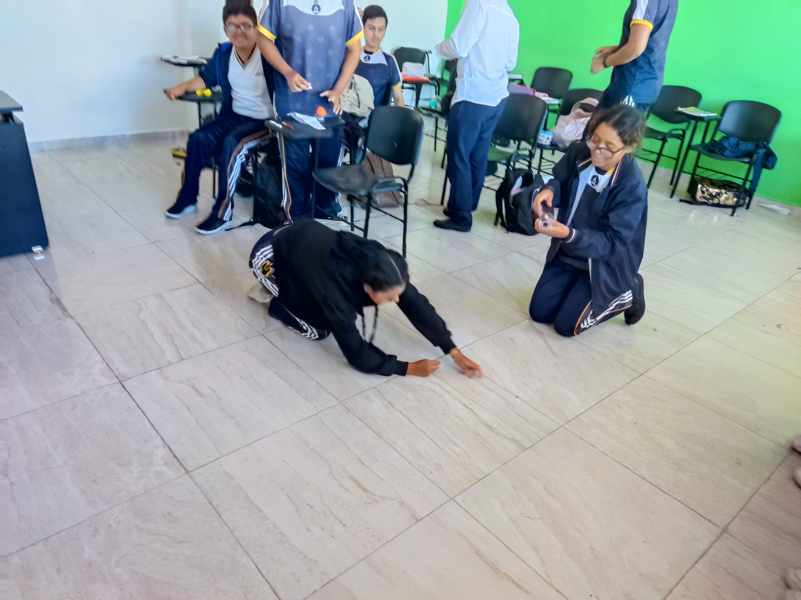
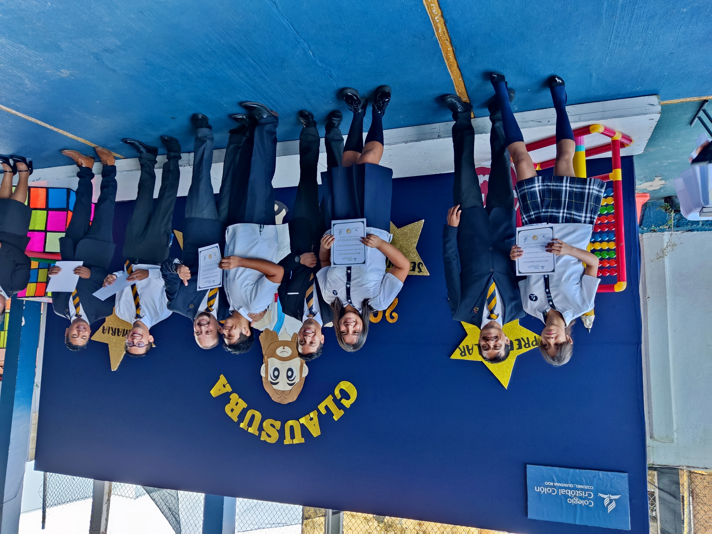
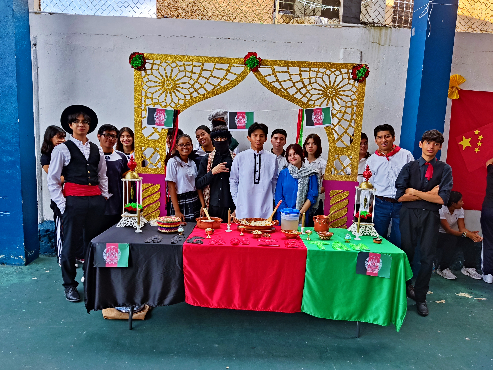

Mi misión es lograr mis propositos academicos, lograr aprender lo que mas pueda antes y despues de la
Universidad. Quiero empezar a emprender con mis conocimientos y tener experiencia en este sector tan
interesante que es la programación.
De igual manera quiero seguir apoyando en la iglesia, tanto en programas o cosas que necesiten, mi
misión es hacer que otros aprendan de Dios con mis actitudes, ser un ejemplo para los demas, que todo
lo que se ponga a mano de Dios el lo bendecira si lo pedimos con fe, amor y gratitud.
Yo me veo en un futuro logrando lo que me propuse, terminar la universidad, no espero asi con 10 todo
y calificación perfecta, lo unico que quiero es aprender todo lo que requiera, no importa el fallo,
si no saber solucionarlo.
De igual manera quiero en este tiempo aprender algún otro oficio, desde la pandemía me propuse a
no quedarme estancado solo con el estudio, sino aprender lo mas que pueda
Mi religión desde niño, desde que aprendi a saber que es cada cosa, ha sido la religión adventista.
Siempre mi mayor pensamiento es que un día Jesús volverá en su segunda venida, que juzgara deacuerdo
a lo que ha hecho cada uno. Yo anhelo que poder entrar en esa puerta angosta y vivir para la eternidad
y alabar a nuestro padre amado.
Lastimosamente como todo ser humano e pecado, pero quiero cambiar y ser diferente, no pensar que por un
error no merezco el perdon, pero tampoco quiero pedir y pedir en todo momento, juzgar sin razón a los demas
y pensar que yo soy mejor. Yo siempre pido por un corazón que sea blando pero fuerte para soportar las pruebas.
Yo me considero una persona muy indecisa y difícil de saber cómo se siente.
A veces estoy muy cansado o a veces con mucha energía.
Soy extrovertido con las personas que me generan confianza, pero con alguien que no conozco para nada
estoy un poco penoso, aunque con un poco de plática agarro confianza.
Últimamente no soy una persona muy activa con el deporte. Antes hacía boxeo, pero desde que me lesioné
lo dejé por un tiempo. Intenté volver, pero me pesaba más. Ahora solo camino y hago un poco de sombra
con mancuernas.
Mi pasión es la tecnología. Desde pequeño he tenido la curiosidad de todo lo relacionado, no solo con
videojuegos, sino con todo: computadoras, transmisiones, programas y aplicaciones.
Por eso quiero estudiar una ingeniería. Todavía no sé cómo ni dónde, pero eso quiero estudiar.
Para ir terminando el apartado, me gustaría mencionar que actualmente soy una persona que le encanta
ser bondadosa y amigable. Me encanta la tranquilidad y, de vez en cuando, hacer un relajo.
Aunque lo que me encantaría mencionar es que actualmente soy feliz con mi pareja sentimental/amorosa.
Ella es lo que más amo y a quien quiero amar. Aunque parezca solo un amor joven, me encantaría que
(si, claro, está en planes de Dios) estemos juntos, llegar al casamiento y ser felices.



Contenido pendiente de escribir
Contenido pendiente de escribir
Contenido pendiente de escribir
Contenido pendiente de escribir
Contenido pendiente de escribir
Contenido pendiente de escribir
Contenido pendiente de escribir
Contenido pendiente de escribir
Contenido pendiente de escribir